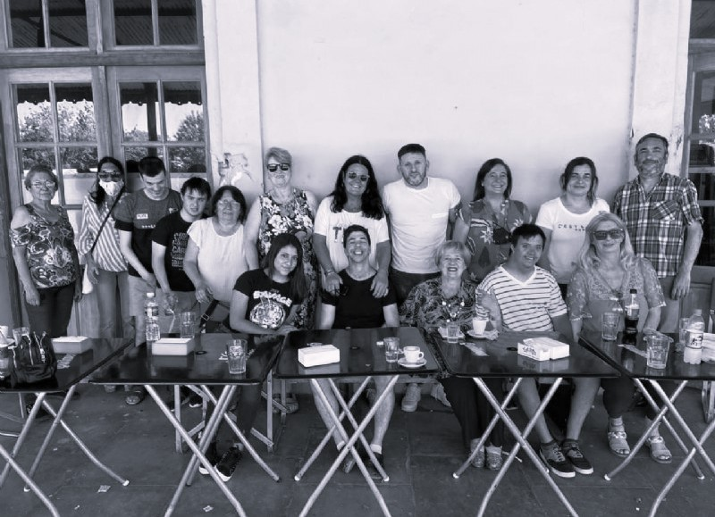
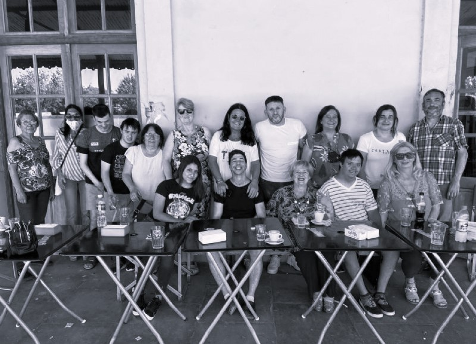
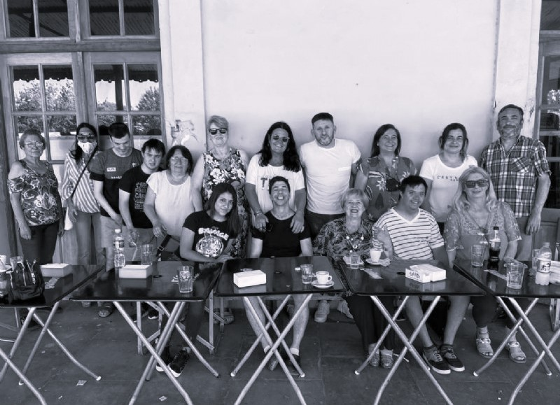

El Servicio de Hogar data de 2004, funciona las 24 hs del día los 365 días del año, en una casa alquilada, alojamos a adultos con distintas discapacidades, que requieren de una atención especial y que por diversas circunstancias no pueden vivir con su familia. Ser un hogar para pocos residentes, nos permite ofrecer una atención personalizada, proporcionando a cada uno de nuestros jóvenes la posibilidad de mantenerse activos y estimulados, mediante el seguimiento de metas pedagógicas y terapéuticas destinadas a potenciar las capacidades de cada uno, su singularidad y autodeterminación. Nuestra modalidad es de puertas abiertas. Esto permite que los padres o responsables visiten a sus seres queridos en cualquier momento del día, lo que contribuye a favorecer el vínculo familiar.
